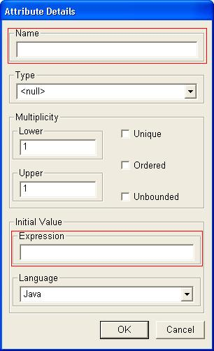
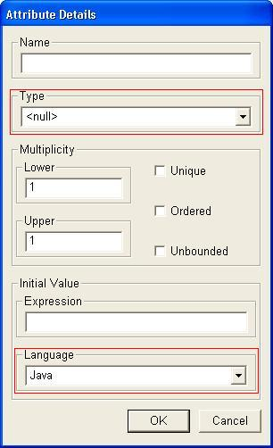
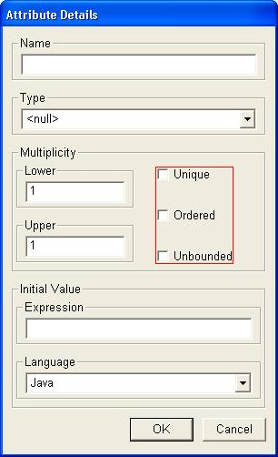
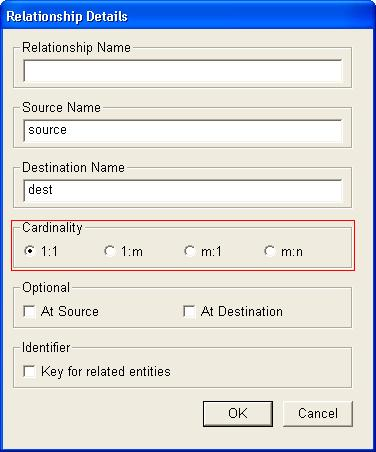
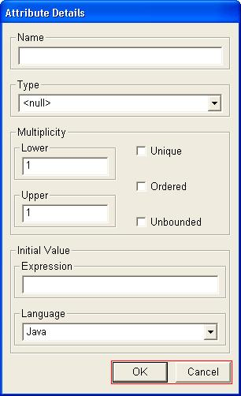

|
|
QSEE SuperLite - Dialogue boxes
This document provides help information related to the use of
'Dialogue boxes' within the QSEE SuperLite environment. Dialogue boxes
are used to allow the input of specific information related to objects
during modeling. The exact nature of the dialogue boxes is
dependent upon the actual tool being used, there are however
commonalities relating to the type and behavior of components shown on a
dialogue box. The examples shown are taken from the multi-CASE tool.
To return to the main help page click the
back button below -
|
|
Edit Boxes
Edit boxes are the most common component that appears on a dialogue box and
allows the input of textual characters, such as names etc. In certain
circumstances the content of the edit box may be restricted in someway, e.g.
only numbers may be entered. To enter a value in the edit box left click
inside the white area of the box and key in the text required. e.g. In the
following dialogue box the areas outlined with red rectangles show the edit
boxes.

Drop Down Lists
Drop down lists are components that allow the user to pick a value from a
list. They are used when the data needed may be one of several existing values.
In certain circumstances the user may also be able to type their own value into
the top edit box, but this is dependent upon the nature of the tool being used.
To select a value from the list left click on the downwards arrow to the right
of the box and select an option from the list. e.g. In the dialogue box shown
below the areas outlined with a red rectangle identify two drop down list
components.

Check Boxes
Check box components allow the user to set a value to true or false. i.e.
they are either ticked or not ticked To set a value within a check box
left click inside the white box. When a box is selected a black tick will
appear, otherwise the box will be empty. e.g. In the dialogue box shown below
the area outlined with the red rectangle contains three check box components.

Back To TopRadio Buttons
Radio button components allow the user to set a single option
to be true and all other related options to be false. Radio buttons are
similar to check boxes except they are grouped together, and only one of the
group may be selected at any one time. To activate a radio button left
click on the button next to the option you wish to activate. A black dot is
displayed in the middle of the button that is currently activated. All other
related radio buttons will be automatically made inactive. e.g. In the
dialogue box shown below the area outlined with the red rectangle contains
four radio buttons, only one of which will be active at any one time.

Back To Top
OK/Cancel Buttons
Nearly all dialogue boxes contain an OK and Cancel button. One of these
buttons must be pressed once input into the dialogue is complete. Both buttons
will close the dialogue but do so in different ways. The "OK" button closes the
dialogue and saves any changes made to the contained values. The "Cancel" button
closes the dialogue but ignores any changes made, i.e. the operation is
cancelled even if new data was entered. Some forms also have
additional/different buttons, but their usage is dependent upon the current tool
being used. e.g. In the dialogue box shown below the area outlined with the red
rectangle contains the OK and Cancel buttons.


To return to the main help page click the button
below -